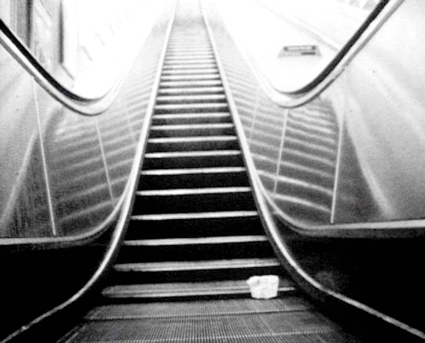

Back

Tube
2004, 16mm, b&w, sound, single screen, 8' 00
Statement
A personal view of London’s underground train network. The daily spectacle is emphasised by in-camera superimpositions and perfected by the removal advertising and graffiti by painting on the negative. This idealised, lyrical view of the off-peak experience is then contrasted with the reality of the rush-hour commuting.
Preview link
Available on request.
Funding
Wandsworth Council Film Award
London Film and Video Development Agency
Distribution
16mm print
Lightcone distribution page for Tube
Awards & nominations
- 2008: Distinction – Gstaad International Short Film Festival for Artists’ Films
- 2006: Winner – Time Out Award for Best London Film, Halloween Film Festival (London)
- 2005: Nominated – Tiger Cub Competition Rotterdam Film Festival
- 2005: Nominated – Leo Award for Best Soundtrack, Braunschweig Film Festival
Screenings
- 2012: Association Coxa-Plana, Saint-Étienne, France
- 2008: Gstaad International Short Film Festival for Artists’ Films, Switzerland
- 2007: Documento y ciudad, CaixaForum, Barcelona
- 2007: Concorso, Lucca Film Festival
- 2006: Panorama Internacional, La Enana Marron, Madrid
- 2006: Satellite of Love, Platform Garanti, Istanbul
- 2006: Satellite of Love, Witte de With, Rotterdam
- 2006: Passage Cinema, Viper Competition, Basel
- 2006: Rencontres Internationales, Paris
- 2006: Halloween Film Festival, London
- 2005: Kassel Documentary and Video Festival, Germany
- 2005: Rotterdam International Film Festival, Holland
- 2005: Xperimental 4.0 , Pantheon Gallery, Nicosia
- 2005: Tehran Short Film Festival, Tehran
- 2005: International Art Film Festival, Trenčianske Teplice, Slovakia
- 2005: Egaremonts, Rencontres Paris
- 2005: L'Alternativa, Barcelona
- 2005: Jeonju International Film Festival, Korea
- 2005: International Film Festival of Uruguay, Montevideo
- 2005: Braunschweig Film Festival, Germany